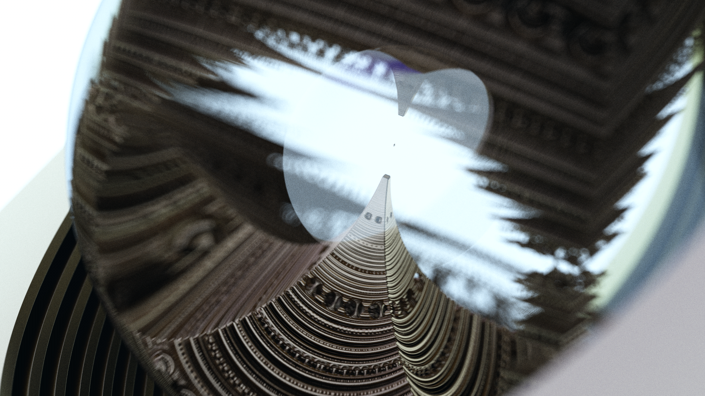
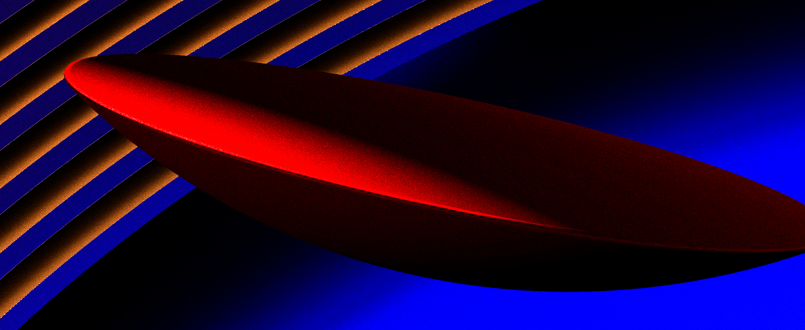
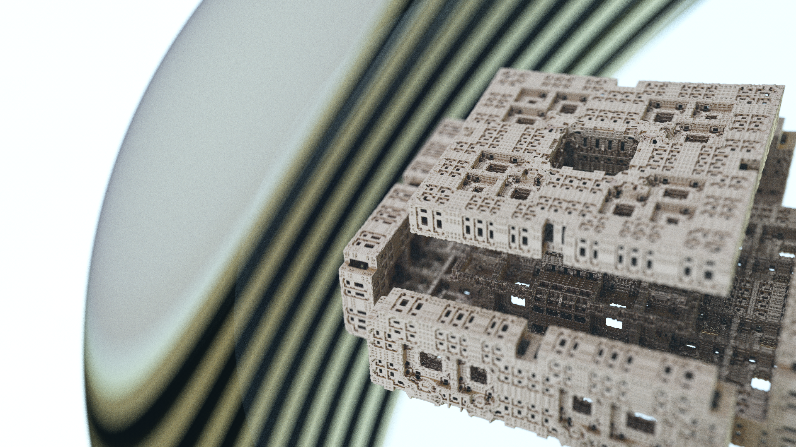
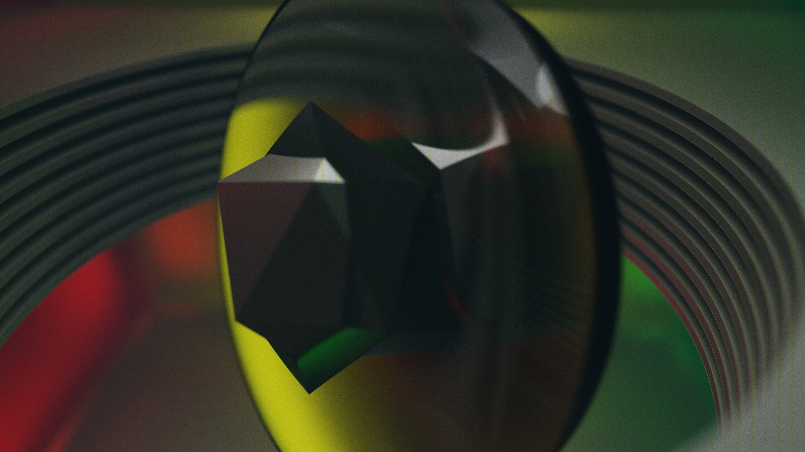
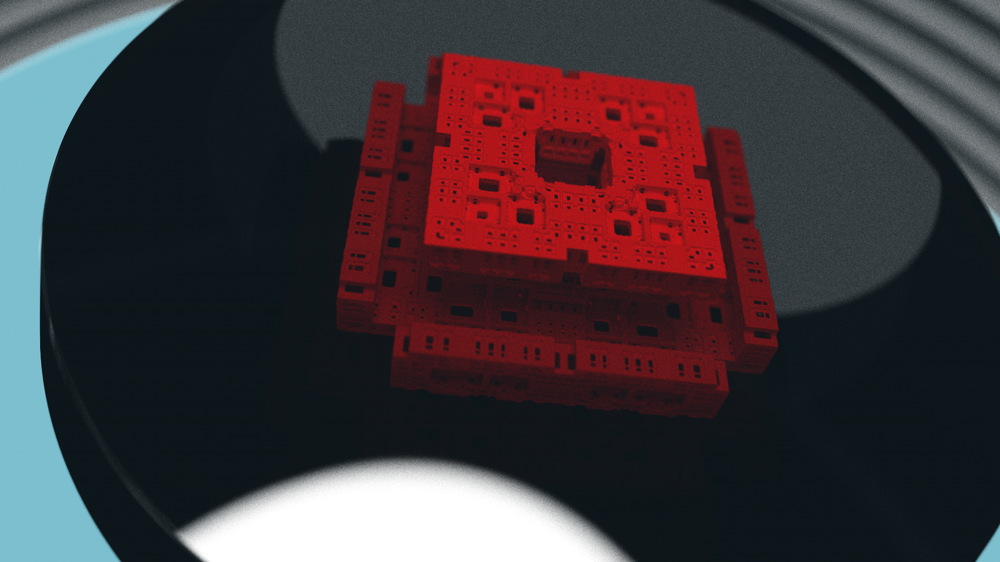
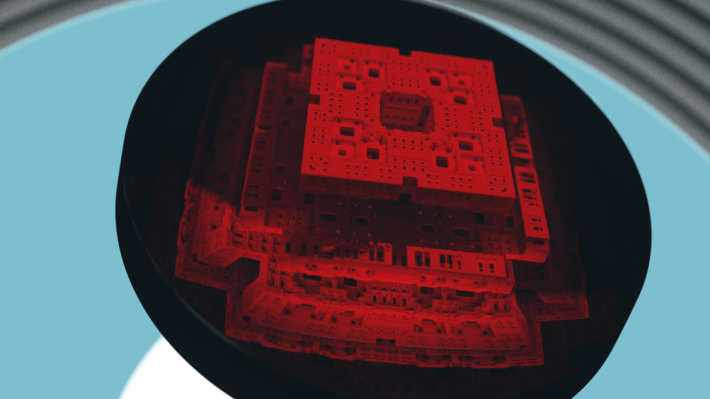

GPU SDF Pathtracing: Refraction - WIP
This was my next step after getting pathtracing with basic materials done. Continuing on with an SDF based model for geometry, this part of the project introduces a separate distance estimator which represents the refractive materials, defined in the same space as the rest of the geometry. By having these as two separate entities, there are two distinct types of geometry intersections that can happen: normal and refractive (refractive has two types, but we will get there).
Vessica Picis
There's a classical shape from geometry which is the intersection of two circles of the same radius. I'm not sure what spurred my initial interest, but this inspired the method by which I formed the lens shape. Extending the idea of the vessica picis two three dimensions, I used the intersection of two sphere SDFs. In my implementation, the two spheres can have different radii, and are separated by some lens thickness. Their centers are separated by radius1 + radius2 - thickness. As you can see, the use of two distinct radii creates different curvature on either side of the lens - this will create different refractive behavior for viewer positions on either side. For the purposes of this discussion, this is the refractive object that I will be dealing with.
Refraction
Refraction is a phenomena that occurs with light rays, by which the direction bends at interface changes. These interfaces exist between materials with different index of refraction (IOR) values. These types of materials are called 'dielectric'. IOR is a ratio of how quickly light can pass through this material, relative to the speed of light in a vacuum. By specifiying this quantity for the lens, and assuming a value of 1.0 for the surrounding 'air', we have now established a partitioning of the space. Independent of the rest of the scene geometry, there is 'inside the lens' and 'outside the lens'.

As light passes through these interfaces between dielectric materials, these bends will affect the direction of the ray as it continues farther into the scene. As you can see in the images above and below, this can create a magnification effect, as the rays have effectively diverged out from one another, spreading out and becoming less parallel. This plays interestingly with the DoF calculations, as well as creating some interesting visual distortion, as you can see here.
WIP
WIP
WIP
Implementation
WIP
A Limited Model for Nested Dielectrics

Viewer Inside the Lens


Objects Embedded in Lens
  Wierd Stuff


Future Directions
One of the major things I want investigate from here is spectral rendering. This eschews the concept of using RGB tuples as your primary representation, and instead represents light as spectral distributions. In doing this, you can start to see a wavelength dependence in the behavior of rays interacting with materials. This manifests in things like chromatic aberration, and the rainbow colored dispersion through the prism on the cover of Pink Floyd's The Dark Side of the Moon.